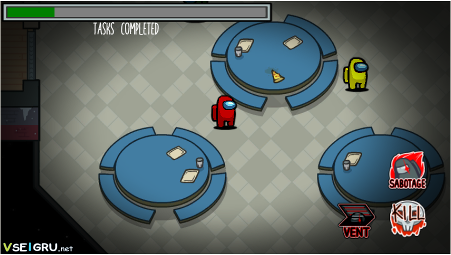

Among Us[b] (с англ. — «Среди нас») — многопользовательская компьютерная игра, разработанная американской игровой студией Innersloth[3],
а затем выпущена под iOS, Android в июне 2018 года, а под Windows в ноябре 2018 года. В декабре 2020 года, ввиду резкого всплеска популярности,
игра стала доступна на Nintendo Switch, также стала доступна для PlayStation 4, PlayStation 5, Xbox One, а также Xbox Series X/S. Отдельная VR-версия игры,
Among Us VR, будет выпущена для Meta Quest 2, SteamVR и PlayStation VR, её разработкой занимается компания Schell Games.
Игра была вдохновлена командной ролевой игрой «Мафия» с детективным сюжетом, а также научно-фантастическим фильмом ужасов «Нечто». Игроки случайным образом разделяются
на две команды: члены экипажа и скрытые среди них предатели. Члены экипажа не знают, кто из их товарищей предатель, и могут голосованием «казнить» любого персонажа,
пытаясь выявить предателей с помощью дедукции. Члены экипажа выигрывают, если им удастся избавиться от предателей или хотя бы довести до завершения все предложенные
экипажу задания-головоломки; предатели же выигрывают, если им удастся, не попадаясь, скрытно убить достаточное количество членов экипажа либо довести до завершения
крупную диверсию — например, устроить расплавление в реакторе или прекратить подачу кислорода. На выбор доступно 4 локации — это The Skeld, MIRA HQ, Polus, The Airship.
Хотя игра была первоначально выпущена в 2018 году, свою грандиозную популярность она получила лишь в 2020 году из-за того, что в Among Us в то время играло огромное
количество известных пользователей сервиса Twitch, а также видеохостинга YouTube. Пандемия COVID-19 также оказала влияние на популярность Among Us. В ноябре 2020
года количество игроков по всему миру составляло около 500 миллионов. Игра получила довольно положительные отзывы критиков. Последние, в свою очередь, оценили
игровой процесс, а также сеттинг игры в целом, однако отмечали некоторые технические неисправности. Among Us также получила несколько престижных наград, включая
таковую от Golden Joystick Awards в номинации «Прорыв года»; награду от The Game Awards 2020 в номинациях «Лучшая мобильная игра», а также «Лучшая многопользовательская игра».
В ответ на популярность оригинальной игры в августе 2020 года был анонсирован сиквел — Among Us 2, однако, запланированное продолжение было отменено уже через месяц. Команда
заявила, что сконцентрировала своё внимание на развитии оригинальной игры[20][21].
На тему Among Us в Сети появилось огромное количество интернет-мемов, включая постироничный мем «Амогус».
Як грати в цю гру

Among Us — многопользовательская 2D игра от третьего лица с видом сверху, которая рассчитана на 4—15 человек.
Игрок может перемещаться во всех направлениях. В начале игры каждому тайно выдаётся роль предателя, члена экипажа, инженера, оборотня или учёного.
В каждом раунде до трёх игроков случайным образом[22] выбираются в качестве самозванцев. Раунд может проходить на одной из четырёх карт: на космическом корабле
The Skeld, внутри здания штаб-квартиры под названием MIRA HQ, на исследовательской базе под названием Polus[23], на дирижабле The Airship. Предатель может
прятаться в вентиляционном люке, устраивать саботажи. Цель самозванцев заключается либо в убийстве почти всех членов экипажа (если космонавтов осталось
столько же, сколько и предателей, то последние побеждают), либо в ликвидации корабля/штаб-квартиры/исследовательской базы/дирижабля путём саботажа. Целью
же членов экипажа является выполнение различных заданий-головоломок, выдаваемых в начале игры: если каждый выполнит все свои задания, то предатели проиграют.
Также члены экипажа могут достичь победы путём устранения предателей во время голосования.
В начале игры товарищам по команде назначаются так называемые задания, которые могут быть представлены в форме мини-игр, мини-головоломок и простых переключателей;
в основном таковые состоят из работ по техническому обслуживанию жизненно важных систем, как, например, фиксация проводов и загрузка данных[24]. Предателям даётся
фальшивый список предлагаемых заданий, которые могут быть использованы для того чтобы слиться с членами экипажа. Однако самозванцы не могут законно выполнять поставленные
задачи и могут только делать вид, что выполняют какие-либо поручения на локации. Впрочем, самозванцы могут: саботировать жизненно важные системы (такие как подача кислорода);
используя двери, закрывать проходы в отсеки; быстро и незаметно перемещаться, используя систему вентиляции; убивать членов экипажа и превращаться в их аналоги (в роли оборотня).
Идентифицировать Самозванцев экипажу помогают располагающиеся на каждой карте различные системы наблюдения: камеры видеонаблюдения и административная система, располагающиеся на
космическом корабле (карта The Skeld)[25], журнал охраны, расположенный в штаб-квартире (локация MIRA HQ)[26] и индикатор жизненно важных
функций, расположенный на исследовательской базе (локация Polus)[27]. Члены команды также могут подтвердить свою личность с помощью визуализирующихся заданий — заданий, которые имеют анимацию, воспроизводящуюся только для членов команды; выполнение таковых не может быть сымитировано самозванцами[28].
На месте убийства остаётся труп. Если какой-либо игрок обнаружил его, он может созвать срочное совещание, на котором в ходе обсуждения члены экипажа вычисляют предателя,
а затем голосуют за подозреваемого. Игрок, который получил большее количество голосов, выбрасывается в космос, лаву, скидывается с обрыва или сбрасывается с дирижабля —
то есть, погибает, но продолжает игру в виде невидимого призрака, способного продолжать выполнять задания, защищать игроков (в роли ангела-хранителя), устраивать саботаж,
проходить сквозь стены и наблюдать за происходящим, но не имеющего права голосовать и общаться с другими живыми пользователями. Пользователи имеют право голосовать за кого
угодно или вообще не делать этого — в случае, если больше половины не проголосует, никто не выбывает. Если же все предатели будут ликвидированы, то члены экипажа победят.
Имеется возможность устроить обсуждение, даже если все игроки живы, однако эта функция имеет лимит использования, а её использование недоступно в случае неисправленной
поломки на корабле. Если предатель совершил убийство или превращение, то следующее действие он может сделать только через некоторое время.
Предатели могут время от времени устраивать саботаж: запереть одну из комнат, отключить свет для сужения поля видимости, нарушить систему связи, запустить обратный отсчёт
до расплавления в реакторе, столкновения с вертолётом, утечки кислорода. В трёх последних случаях саботаж приведёт к победе предателей, если поломки не будут исправлены за
30 или 50 секунд в зависимости от выбранной локации.